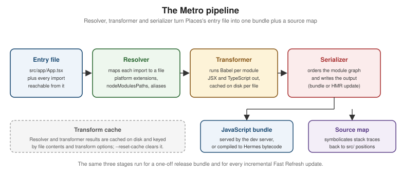
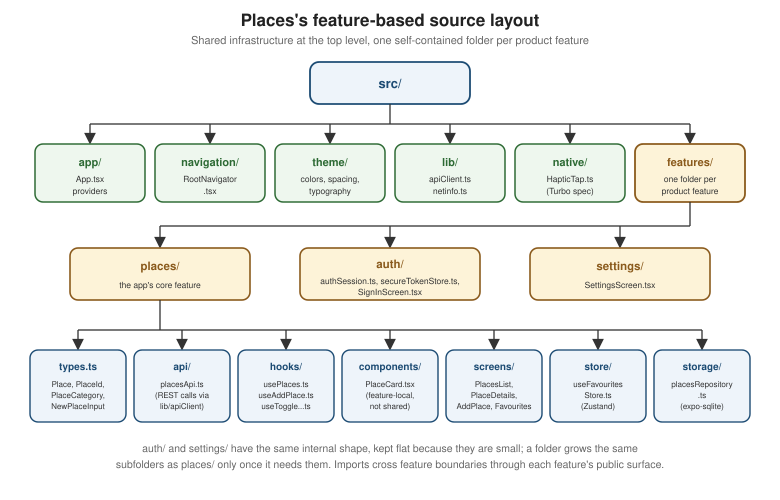

Tooling, Metro, and Project Structure
|
This content was generated with the assistance of AI and should be verified against the official documentation before being relied on in production. |
Every page so far has treated Places's source tree and its build as given: a file under src/ is imported,
and it ends up running on a device. This page opens both. The first half is Metro, the bundler that turns
that tree into a bundle, and the surrounding toolchain — Babel, library installation and autolinking, linting
and formatting. The second half is everything that decides how the tree itself is shaped: the feature-based
layout Places uses and that every other page in this section refers to by file path, path aliases, monorepo
workspaces, a web target alongside the two native ones, publishing a piece of the tree as its own library, and
keeping all of it upgraded.
Metro: What Actually Builds the Bundle
Metro is React Native’s bundler. It does for a React Native app what Vite or webpack does for a web app — start from an entry file, follow every import, and produce one JavaScript artifact — but it is built around
the constraints a mobile app has and a web page does not: two platforms compiled from one source tree, no
network-loaded chunks by default, and a development loop where the whole graph is rebuilt incrementally on every
keystroke.
Metro’s work splits into three stages that always run in the same order.

The Resolver
The resolver answers one question per import: given the string './PlaceCard' written inside
src/features/places/screens/PlacesListScreen.tsx, which file on disk is that? It walks relative paths, package
names in node_modules, package.json exports maps, and any alias configuration, and it is where the
platform-specific extension rules described below live. Resolver behaviour is configured under
config.resolver — sourceExts (which extensions count as source), assetExts (which count as bundled
assets, such as png and ttf), nodeModulesPaths, extraNodeModules, and, for anything the built-in
algorithm cannot express, a resolveRequest function that is consulted first and can return a resolution of its
own.
The Transformer
The transformer runs over each resolved file individually, turning it into something Hermes can execute — in practice, running it through Babel with @react-native/babel-preset, which strips TypeScript’s type syntax,
compiles JSX into React.createElement-equivalent calls, and lowers any syntax the target Hermes version does
not parse natively. This stage is the expensive one, which is why its output is cached per file (see
The JavaScript Runtime and Hermes for what the
transformed code then runs on).
The Serializer
The serializer takes the transformed module graph and writes the output: ordering modules so dependencies are defined before their dependents, wrapping each in Metro’s module registry, appending the runtime that boots the entry module, and emitting the source map alongside. The serializer is also what produces an incremental Hot Module Replacement payload during development instead of a whole bundle — the same graph, serialized as just the modules that changed, which is what makes Fast Refresh feel instant.
metro.config.js and metro.config.mts
A project created with npx create-expo-app@latest gets a metro.config.js that starts from the framework
defaults and exports them unchanged. React Native 0.87 ships Metro 0.87, in which a TypeScript/ESM
configuration file — metro.config.mts — is stable, so a project that prefers typed configuration over
CommonJS can rename the file and get autocompletion and type errors on every option it sets:
// metro.config.mts
import { getDefaultConfig } from 'expo/metro-config';
const config = getDefaultConfig(import.meta.dirname);
// Bundle .lottie animation files as assets rather than trying to parse them as source.
config.resolver.assetExts = [...config.resolver.assetExts, 'lottie'];
export default config;The same release dropped .es6 configuration files and YAML configuration, both long-deprecated legacy
formats; a project still carrying one has to move to .js, .cjs, .mjs or .mts before it can run on Metro
0.87. Whichever extension is used, the object shape is the same — top-level resolver, transformer,
serializer, server and watchFolders keys — and the recommended pattern is always to start from
getDefaultConfig() and mutate, never to hand-write a configuration object from scratch, because the framework
defaults carry the asset extensions, transformer path and platform list the rest of the toolchain assumes.
Platform Resolution and .native / .web Extensions
The resolver’s most visible React-Native-specific behaviour is platform extensions. An import written once
as './PlaceCard' resolves to a different file depending on which platform Metro is bundling for, by trying a
prioritized list of suffixes before falling back to the plain name:
| Bundling for | Resolution order for ./PlaceCard |
|---|---|
iOS |
|
Android |
|
Web (via |
|
Two things follow from that table. First, .native.tsx is not a third platform — it means "iOS and Android
but not web," which is exactly what a universal codebase needs when one implementation covers both mobile
platforms and the web needs a different one. Second, the fallback file (PlaceCard.tsx, no suffix) is what
every platform gets when no more specific file exists, so a file split is purely additive: adding
PlaceCard.web.tsx to a project that has only PlaceCard.tsx changes nothing on iOS or Android.
Platform extensions are the file-level half of platform-specific code; the expression-level half — Platform.OS, Platform.select(), and platform-specific props — is covered on
Platform-Specific Code and Device APIs. The
rule of thumb is the same one that applies to any conditional: a couple of branches inside one component belong
in Platform.select(), while two genuinely different implementations belong in two files.
Source Maps and Symbolication
Because the code running on the device is transformed and concatenated, a stack trace from it points at
positions in the bundle, not in src/. The source map the serializer emits is what maps those positions
back. In development this happens automatically: Metro’s dev server exposes a /symbolicate endpoint, and the
red error screen, the DevTools console and the Dev Menu all route frames through it before displaying them, so
what a developer reads is already PlacesListScreen.tsx:42.
In a release build there is no dev server, so the source map has to be produced and uploaded as part of the
build instead. The bundling step accepts an explicit output path for it (--sourcemap-output when invoking the
bundle command directly; EAS Build and the Xcode/Gradle bundle phases produce one as a build artifact), and the
crash reporter — Sentry, in Places's case, set up on
Debugging and DevTools — needs that map uploaded against
the same release identifier so that production crash reports symbolicate the same way local errors do. A source
map that is not uploaded is a set of unreadable minified frames in the crash dashboard; one that is uploaded
must also never be shipped inside the app bundle itself, since it is a complete copy of the original source.
The Metro Cache
Metro caches resolver and transformer results on disk, keyed by file contents plus the full set of transform
options, so an unchanged file is never transformed twice across restarts. The cache is why a warm npx expo
start is fast and a cold one is not, and why a dependency upgrade or a Babel configuration change makes the
first build after it slow again — the key changed, so everything re-transforms.
The cache is also the first thing to suspect when Metro serves stale or impossible output: a module that was
deleted still resolving, a change to babel.config.js apparently having no effect, a symlinked workspace
package serving its previous build. npx expo start --clear (or --reset-cache on the Community CLI’s
start) discards it and rebuilds from scratch. For CI, config.cacheStores lets the cache live somewhere
shared and restorable rather than in the runner’s temporary directory, turning a clean-checkout build into a
warm one.
Serving the Dev Bundle over TLS
Metro’s dev server speaks plain HTTP by default, which is fine for a simulator or a device on the same network.
Some environments refuse that: a web target under a service worker or any API gated behind a secure origin, a
corporate network that blocks unencrypted local servers, or a device policy that will not load an
HTTP-served bundle. Metro can serve over TLS instead — the start command takes --https together with
--key and --cert paths (the equivalent server options exist in the configuration file), after which the
bundle URL the app is pointed at is an https:// one and the certificate has to be trusted on the device for
the connection to succeed. This affects the development server only; it has nothing to do with how the
shipped app talks to its backend, which is covered on Security.
Babel
Metro delegates the actual per-file transformation to Babel, configured by babel.config.js at the project
root. A fresh project’s file is one line of substance:
// babel.config.js
module.exports = function (api) {
api.cache(true);
return {
presets: ['babel-preset-expo'],
};
};babel-preset-expo wraps @react-native/babel-preset (which a Community CLI project uses directly) and adds
the framework’s own transforms. Application code rarely needs to touch this file at all; the cases that do are
narrow and each comes from a library that ships a Babel plugin: `react-native-reanimated’s plugin, which must
be listed last, and the React Compiler, both introduced on
Performance. Adding a plugin here changes the transform cache key, so
the next Metro start is a cold one.
One distinction worth keeping straight: Babel is not what type-checks Places. It erases TypeScript’s type
annotations without reading them, which is why a type error never fails a Metro build — type checking is a
separate tsc --noEmit step, as covered on TypeScript.
Installing Libraries
Adding a React Native library has two halves: the JavaScript half, which is an ordinary npm install, and the native half, which has to end up compiled into the iOS and Android apps.
In an Expo project, the install command is npx expo install <package> rather than npm install. The
difference is that expo install resolves the version of the package that is compatible with the project’s
Expo SDK version (SDK 57 for Places) instead of the latest published one, which is what prevents a library
built against a different React Native version from being pulled in. npx expo install --fix retroactively
realigns every already-installed package to its SDK-compatible version, and npx expo-doctor reports
mismatches without changing anything.
Autolinking
Once installed, a library’s native code is wired into the build by autolinking, with no manual project-file editing on either platform:
-
iOS — the library’s
.podspecis discovered and added to the generatedPodfile.lockwhenpod installruns (whichnpx expo prebuildand the Xcode build phase both trigger). React Native also supports Swift Package Manager as an alternative dependency manager for libraries that ship an SPM manifest, which matters mainly for Swift-first libraries and for projects integrating React Native into an existing SPM-based app. -
Android — a Gradle plugin scans the installed packages, adds each one’s Gradle project to the build, and generates the code that registers its
ReactPackage, so nothing has to be added tosettings.gradleorMainApplication.ktby hand.
Autolinking covers the overwhelming majority of libraries. What it cannot do is install the native toolchain
state around them: a newly autolinked iOS dependency still needs pod install to have run, and an Android one
still needs a Gradle sync, which is why "I installed it and it is not found" is almost always a rebuild away
rather than a configuration problem. A library that genuinely needs manual linking — rare, and a sign of an
unmaintained package — says so in its own README.
Checking Compatibility Before Installing
Two compatibility questions have to be answered before a dependency is added to Places, because neither has a cheap fix afterwards:
-
Does it support the New Architecture? React Native 0.87 is New-Architecture-only; there is no bridge to fall back to. A library whose native code was written against the legacy bridge and has not been migrated either works through the interop layer or does not work at all.
-
Does it work in Expo Go, or does it need a development build? A library with custom native code cannot run inside the prebuilt Expo Go client; it needs a development build, as covered on Getting Started with React Native.
The React Native Directory (reactnative.directory) is the searchable index that answers both: every
listed package carries flags for New Architecture support, Expo Go compatibility, the platforms it targets, and
its maintenance status, so the check is a search rather than an afternoon of reading source. For anything not
listed there, the equivalent evidence is the library’s own repository — recent releases against 0.8x, a
codegenConfig block or Turbo Module/Fabric component specs in its package.json, and issues that are actually
being closed.
Linting and Formatting
ESLint 9 uses flat configuration: a single eslint.config.js / .mjs file exporting an array of
configuration objects, replacing the older .eslintrc cascade. Each object in the array optionally narrows
itself with files, and later objects override earlier ones, so the order of the array is the whole
configuration model. @react-native/eslint-config remains the shareable config carrying React Native’s own rule
set (React, React Hooks, and the React-Native-specific rules) and is consumed from a flat config through
FlatCompat; an Expo project can use `eslint-config-expo’s flat entry point directly instead.
// eslint.config.mjs
import { defineConfig } from 'eslint/config';
import { FlatCompat } from '@eslint/eslintrc';
import prettier from 'eslint-config-prettier';
const compat = new FlatCompat({ baseDirectory: import.meta.dirname });
export default defineConfig([
// 1. Never lint generated or native output.
{ ignores: ['node_modules/**', 'android/**', 'ios/**', '.expo/**', 'lib/**', 'coverage/**'] },
// 2. React Native's own rule set (still an eslintrc-style shareable config).
...compat.extends('@react-native'),
// 3. Places's own overrides, scoped to application source only.
{
files: ['src/**/*.{ts,tsx}'],
rules: {
'no-console': ['warn', { allow: ['warn', 'error'] }],
'react-hooks/exhaustive-deps': 'error',
},
},
// 4. Tests may reach for things application code may not.
{
files: ['**/*.test.{ts,tsx}', '**/__tests__/**'],
rules: { 'no-console': 'off' },
},
// 5. Last, so it wins: disable every rule Prettier already decides.
prettier,
]);Prettier handles formatting — quote style, trailing commas, line width — and is deliberately not an
ESLint concern: eslint-config-prettier, placed last, switches off every stylistic ESLint rule so the two tools
cannot disagree, and Prettier runs on its own (npx prettier --write ., plus an editor-on-save integration and
a CI --check run). Both belong in the same CI job as the type check, covered on
Testing.
Boilerplates and UI Libraries
A project does not have to start from the bare template. Boilerplates — Ignite, the Obytes starter, the
react-native-boilerplate family — ship an opinionated stack (navigation, state, networking, testing, CI) so
the first commit already has structure. The trade-off is the usual one: the decisions are made for you, which is
valuable on day one and a liability on the day you disagree with one of them, since a boilerplate is copied into
your repository rather than depended on and diverges from upstream immediately. Places deliberately starts
from the plain Expo template and assembles its stack page by page, so that every choice is visible.
UI libraries are a longer-lived decision than a boilerplate, because they shape the component code itself. The three most commonly reached for:
| Library | Styling model | What you get | What it costs |
|---|---|---|---|
React Native Paper |
Ordinary |
A complete, mature Material Design 3 component set — buttons, cards, dialogs, snackbars, lists — with
accessibility already wired into each component, and |
An explicitly Material look; matching a non-Material design system means overriding a lot, and every component is a dependency you do not control |
gluestack-ui |
Utility-class styling (Tailwind-shaped, via NativeWind) over unstyled, accessible primitives |
Copy-in components that land in your own repository, so you own and edit them; universal by design, and the primitives carry the accessibility and interaction behaviour |
A utility-class workflow that is a real shift for a team used to |
Tamagui |
Its own styling system with a compiler that flattens styles at build time |
The strongest universal (native plus web) story of the three, with measurable render-time wins from the compiler’s static extraction, and a design-token system of its own |
The heaviest setup — a Babel plugin and bundler configuration — and the most opinionated abstraction to learn and debug when the compiler does something unexpected |
None of the three is a prerequisite: Places builds its own small component layer on the core components and
the src/theme/ tokens established on Styling, which is the right default
for a design system that is not Material and a team that wants to read every line of its own UI code.
Project Structure for Large Teams
The template’s flat src/ works up to roughly the point where two people edit it at once. Past that, the
question is what the top-level folders are named after. Grouping by technical kind — components/,
hooks/, screens/, store/ at the root — means every feature is smeared across every folder, so any change
touches four directories and any deletion leaves orphans behind. Grouping by feature means one folder per
piece of product, each containing whatever kinds of file it happens to need.
Places uses the feature-based layout, and it is the canonical tree every other page in this section refers to by file path:
src/
app/App.tsx # root component, providers, RootNavigator
navigation/RootNavigator.tsx # React Navigation static config (native stack + bottom tabs)
theme/{colors,spacing,typography}.ts, theme/ThemeProvider.tsx
lib/apiClient.ts, lib/netinfo.ts
native/HapticTap.ts # Turbo Native Module JS spec
features/
places/
types.ts
api/placesApi.ts
hooks/usePlaces.ts, useAddPlace.ts, useTogglePlaceFavourite.ts
components/PlaceCard.tsx
screens/PlacesListScreen.tsx, PlaceDetailsScreen.tsx, AddPlaceScreen.tsx, FavouritesScreen.tsx
store/useFavouritesStore.ts
storage/placesRepository.ts
auth/
authSession.ts, secureTokenStore.ts, SignInScreen.tsx
settings/
SettingsScreen.tsx
The five non-features/ folders are the shared infrastructure that genuinely has no single owning feature:
app/ boots the application, navigation/ owns the route tree because routes span features by definition,
theme/ and lib/ hold what more than one feature imports, and native/ holds the Turbo Module specs that
Native Modules and Components realizes on each
platform. Everything else lives under its feature.
Three conventions keep the layout from decaying:
-
Depth follows need.
places/has seven subfolders because it is the app’s core feature and has that much in it;settings/is a single file because it is one screen. A folder earns ahooks/directory when it has more than one hook, not in advance. -
Cross-feature imports go through a feature’s public surface, not into its internals.
settings/may read favourites throughfeatures/places’s exported hook; it may not reach into `features/places/storage/placesRepository.ts. A lint rule restricting deep imports acrossfeatures/*boundaries is the cheapest way to make that reviewable rather than aspirational. -
Anything two features need moves up, not sideways. A component copied from
places/components/intoauth/components/should have become a shared component undersrc/instead.
Path Aliases
Deep feature folders make relative imports painful — ../../../lib/apiClient from a screen four levels down — and, worse, make moving a file a find-and-replace exercise. A path alias fixes the import at the project
root instead. Places maps @/ to ./src/ in its tsconfig.json (shown in full on
TypeScript), so the screen writes import { apiClient } from
'@/lib/apiClient' regardless of where it sits.
TypeScript’s paths only teaches the type checker about the alias, though — Metro resolves imports itself
and knows nothing about tsconfig.json. A Babel module resolver plugin, or an extraNodeModules entry in
config.resolver, is what teaches Metro the same mapping; an Expo project gets this wiring for free, since
babel-preset-expo reads tsconfig.json’s `paths and configures the resolver to match. The failure mode when
only one of the two is configured is distinctive and worth recognizing: the editor resolves the import and
type-checks it happily, and Metro reports that the module cannot be found.
Universal Apps with react-native-web
react-native-web implements React Native’s component and API surface on top of the DOM: View becomes a
div, Text a span, StyleSheet styles become real CSS, and Pressable’s interaction states map onto mouse
and keyboard events. That makes a third platform available to the same source tree — an Expo project runs
`npx expo start --web and needs no separate bundler configuration, since Metro handles the web target too.
Most of Places is portable as-is, because it is written against core components rather than platform APIs. The
parts that are not portable are the parts that touch something the web does not have, and those are exactly what
the .web.tsx / .native.tsx split from the resolution table above is for. A worked example: PlaceCard’s
favourite toggle fires the `HapticTap Turbo Module, which has no web equivalent, and the card’s hover
affordance exists only on web.
The shared props contract lives in a plain module both implementations import, so the two files cannot drift:
// src/features/places/components/PlaceCard.types.ts
import type { Place, PlaceId } from '@/features/places/types';
export interface PlaceCardProps {
place: Place;
onPress: (id: PlaceId) => void;
onToggleFavourite: (id: PlaceId) => void;
}// src/features/places/components/PlaceCard.native.tsx
import { Pressable, Text, View } from 'react-native';
import HapticTap from '@/native/HapticTap';
import type { PlaceCardProps } from './PlaceCard.types';
import { styles } from './PlaceCard.styles';
export function PlaceCard({ place, onPress, onToggleFavourite }: PlaceCardProps) {
return (
<Pressable style={styles.card} onPress={() => onPress(place.id)}>
<View style={styles.body}>
<Text style={styles.name}>{place.name}</Text>
<Text style={styles.category}>{place.category}</Text>
</View>
<Pressable
accessibilityRole="button"
accessibilityLabel={place.favourite ? 'Remove from favourites' : 'Add to favourites'}
onPress={() => {
HapticTap.tap('light'); // Native only: no web equivalent.
onToggleFavourite(place.id);
}}
>
<Text style={styles.star}>{place.favourite ? '★' : '☆'}</Text>
</Pressable>
</Pressable>
);
}// src/features/places/components/PlaceCard.web.tsx
import { Pressable, Text, View } from 'react-native';
import type { PlaceCardProps } from './PlaceCard.types';
import { styles } from './PlaceCard.styles';
export function PlaceCard({ place, onPress, onToggleFavourite }: PlaceCardProps) {
return (
<Pressable
// Web only: hover has no meaning on a touch device, and there is no haptic engine.
style={({ hovered }) => [styles.card, hovered && styles.cardHovered]}
onPress={() => onPress(place.id)}
>
<View style={styles.body}>
<Text style={styles.name}>{place.name}</Text>
<Text style={styles.category}>{place.category}</Text>
</View>
<Pressable
accessibilityRole="button"
accessibilityLabel={place.favourite ? 'Remove from favourites' : 'Add to favourites'}
onPress={() => onToggleFavourite(place.id)}
>
<Text style={styles.star}>{place.favourite ? '★' : '☆'}</Text>
</Pressable>
</Pressable>
);
}Every caller keeps importing './PlaceCard' and gets the right one. Note what is not duplicated: the styles
live in a third shared file, and the accessibility labels are identical on both, so a change to either happens
once. The discipline that makes this scale is keeping the split at the leaves — splitting PlaceCard is cheap,
splitting PlacesListScreen would mean maintaining two copies of the screen’s data-fetching logic as well.
Universality is not free: navigation needs URL-addressable routes to behave like a website (Expo Router’s file-based routing, on Navigation, gives this directly), and layout written for a phone needs real breakpoints before it is usable on a desktop viewport.
Monorepos
A monorepo becomes worth it when the mobile app is one of several packages that share code — a @places/core
package of domain types and API clients consumed by the app, a web dashboard, and maybe a Node backend.
pnpm workspaces and Yarn workspaces are both common; pnpm’s strict, non-hoisted node_modules layout is
the one that most often needs Metro told about it explicitly.
Metro’s two monorepo settings both live on the resolver’s side of the pipeline:
-
watchFolders— Metro watches only the project root by default, so an edit topackages/core/src/*.tsoutside the app folder produces no rebuild and no Fast Refresh. Adding the workspace root towatchFoldersputs every package under the file watcher. -
resolver.nodeModulesPaths— tells the resolver whichnode_modulesdirectories to search, and in what order, so a dependency hoisted to the workspace root is found from inside the app.
// apps/places/metro.config.js
const { getDefaultConfig } = require('expo/metro-config');
const path = require('node:path');
const projectRoot = __dirname;
const workspaceRoot = path.resolve(projectRoot, '../..');
const config = getDefaultConfig(projectRoot);
// 1. Watch the whole workspace, so edits in packages/* trigger a rebuild.
config.watchFolders = [workspaceRoot];
// 2. Resolve from the app's own node_modules first, then the hoisted workspace root.
config.resolver.nodeModulesPaths = [
path.resolve(projectRoot, 'node_modules'),
path.resolve(workspaceRoot, 'node_modules'),
];
// 3. With the two paths above being exhaustive, stop Metro walking further up the
// directory tree -- which is what picks up a stray node_modules above the repo.
config.resolver.disableHierarchicalLookup = true;
module.exports = config;Two failure modes account for most monorepo trouble. A duplicated React or react-native — one copy in the
app, another in a shared package — produces hook-ordering errors or two incompatible renderers; the fix is to
keep those packages as peerDependencies in every shared package and dependencies only in the app, so the
resolver finds exactly one copy. And a shared package consumed as built output means every change to it
requires a rebuild before Metro sees it; pointing the package’s entry at its TypeScript source instead lets
Metro transform it directly and restores instant Fast Refresh across package boundaries.
Publishing Your Own Library
Code that outgrows one app — Places's HapticTap Turbo Module, for example, which is useful to any app that
wants a haptic on a toggle — becomes its own package. react-native-builder-bob is the standard tool for
that: it scaffolds a library (npx create-react-native-library@latest) with the native project structure, the
example app and the CI already in place, and then builds the publishable artifacts from src/ — compiling to
ESM output, emitting TypeScript declarations, and running Codegen for a package that ships Turbo Modules or
Fabric components.
Its configuration is a block in the library’s own package.json:
{
"name": "@irurueta/react-native-haptic-tap",
"version": "0.1.0",
"source": "./src/index.ts",
"main": "./lib/module/index.js",
"types": "./lib/typescript/src/index.d.ts",
"exports": {
".": {
"source": "./src/index.ts",
"types": "./lib/typescript/src/index.d.ts",
"default": "./lib/module/index.js"
},
"./package.json": "./package.json"
},
"files": ["src", "lib", "android", "ios", "*.podspec", "react-native.config.js"],
"scripts": {
"prepare": "bob build"
},
"peerDependencies": {
"react": "*",
"react-native": "*"
},
"react-native-builder-bob": {
"source": "src",
"output": "lib",
"targets": [["module", { "esm": true }], "typescript", "codegen"]
},
"codegenConfig": {
"name": "RNHapticTapSpec",
"type": "modules",
"jsSrcsDir": "src",
"android": { "javaPackageName": "com.irurueta.places.haptictap" }
}
}The details that matter most to consumers: files must include the native directories and the .podspec, or
autolinking finds nothing to build; react and react-native belong in peerDependencies so the consuming app
supplies the single copy; source and the exports "source" condition are what let a consuming app in the
same monorepo bundle the library’s TypeScript directly instead of its build output; and codegenConfig is what
makes Codegen run in the consuming app’s build, generating the native interfaces the library’s Kotlin and
Swift implementations conform to — the same mechanism
Native Modules and Components describes for a module
living inside an app.
Upgrading
React Native upgrades change native project files — Gradle scripts, the Podfile, MainApplication.kt,
AppDelegate.swift — not just a version number in package.json, which is why bumping the dependency alone
never works for a project with an ios/ and android/ directory checked in.
The React Native Upgrade Helper is the tool for that case: it renders the exact diff of the template between any two versions, so upgrading is a matter of applying each hunk to the corresponding file in your own project, skipping the ones you have deliberately customized. A project that has diverged a lot from the template is where this is slowest, and the reason to keep native customization minimal.
An Expo project upgrades differently, because the native directories are generated rather than checked in:
bump the expo package to the new SDK, run npx expo install --fix to realign every other Expo-managed
dependency to that SDK’s versions, then npx expo-doctor to catch what is still mismatched, and regenerate the
native projects with npx expo prebuild --clean if they exist locally. Places on Expo SDK 57 upgrades this
way; the Upgrade Helper matters to it only for understanding what changed underneath.
Both paths benefit from the same discipline: upgrade one minor version at a time rather than jumping several, read the release notes for the versions being skipped over, and do it on a branch where the full test suite and a real device build both run before merging.
Release Levels
Not every API in a React Native release carries the same stability promise, and the difference is explicit:
| Level | What it means |
|---|---|
Stable |
The default. Covered by the project’s deprecation policy — an API is deprecated with a migration path for at least a release before it is removed. This is everything Places uses. |
Experimental |
Shipped, usable, and explicitly allowed to change or be removed in any release without a deprecation period.
Usually marked by an |
Canary |
Pre-release builds published continuously from the development branch, ahead of any stable release. Their purpose is letting library authors and large apps test against upcoming changes early and report breakage before it ships. Not a target for a production app. |
The practical consequence is that "it works on 0.87" is not the same claim for all three: a stable API will still be there, with a warning, on the release that eventually removes it; an experimental one may simply be gone.
TV and Out-of-Tree Platforms
iOS and Android are the platforms React Native ships in its own repository. Others exist as out-of-tree
platforms — separate packages that provide their own renderer and native host while reusing the same React
Native core and the same component API, so View, Text and StyleSheet mean the same thing on them:
-
React Native for TV (
react-native-tvos) targets Apple tvOS and Android TV. The distinctive constraint is input: there is no touch, so every interactive element has to be reachable and visible through directional focus from a remote, which is a real change to how a screen is built rather than a styling adjustment. -
React Native macOS and React Native Windows, both maintained by Microsoft, target the two desktop platforms with their native controls.
-
React Native visionOS targets Apple’s spatial platform.
-
Meta Quest / Horizon OS support targets Meta’s headsets, where the 2D panel model is closest to a large TV screen and the same focus-and-pointer input concerns apply.
All of them run a version or two behind React Native core in practice, since each has to absorb every core change into its own renderer, so the realistic question before committing to one is which React Native version it currently supports — not whether it exists.